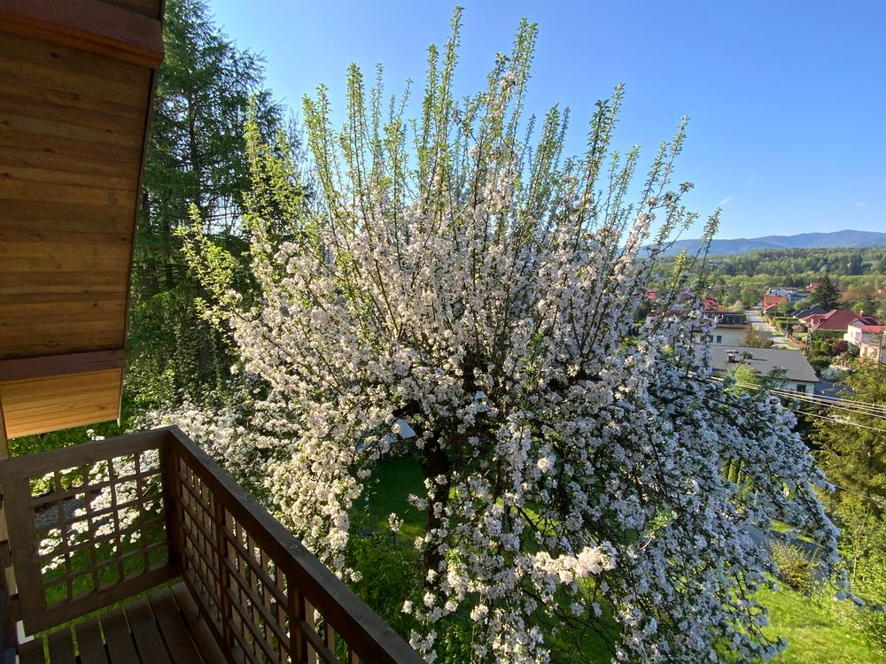
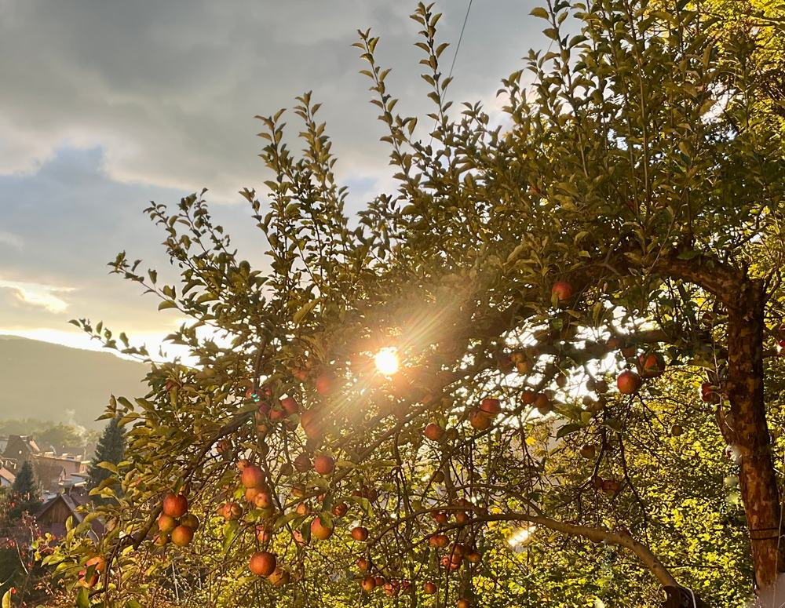

Rodzinny sad w Makowie Podhalańskim
Naturalne soki z Makowskiego Sadu
Soki
naturalne
Odkryj wyjątkowe walory tłoczonych soków jabłkowych z ekologicznego sadu w Małopolsce.
Tradycja i pasja

Jesteśmy niewielkim, rodzinnym przedsięwzięciem z urokliwego Makowa Podhalańskiego. Zajmujemy się tworzeniem naturalnych soków jabłkowych, z pasją oraz troską o środowisko.

Z dala od ruchliwych dróg w sadzie znajduje się nasz dom.

Wiosna w sadzie

Nasze kilkudziesięcioletnie jabłonie rosną w naturalny sposób bez przyspieszaczy wzrostu i są organicznie odporne.

Mieszkając pośród drzew, nie chcemy obcować ze środkami chemicznymi służącymi do usprawniania uprawy – stosujemy permakulturę.


Jabłonie przycinamy jesienią, usuwamy pasożyty, wszystko ręcznie.
Mikroekosystem
Nasz sad to mikroekosystem, gdzie każde drzewo i owad ma swoją rolę. Nie chcemy tego zaburzać, stosując „chemię”.


Dbamy o różnorodność sadu, tworząc środowisko, w którym różni goście są mile widziani.
Nie stosujemy oprysków, środków ochronnych ani sztucznych nawozów.


Zbiór ręczny
Starannie zbieramy i selekcjonujemy jabłka, tylko najlepsze trafiają do naszych soków.



Droga do tłoczni
Wyselekcjonowane jabłka transportujemy do „Tłoczni Choczni” pod Wadowicami.

Współpracujemy z lokalnymi biznesami
Stadnina koni. Nadmiarowe jabłka zawozimy dla koników pana Andrzeja. Jazda konna
Leśnicy i myśliwi. Nasze jabłka też idealnie nadają się do karmienia zwierząt leśnych. Dzikie zwierzątka zostają w lesie i nie wchodzą w szkodę :)
Pozostałe odpady oddajemy do lokalnego Punktu Selektywnej Zbiórki Odpadów Komunalnych.

W Tłoczni Choczni
„Tłocznia Chocznia” to profesjonalna tłocznia, wyposażona w nowoczesne urządzenia, które zapewniają precyzję, skuteczność procesu tłoczenia i dbałość o środowisko naturalne.
Cały proces jest zoptymalizowany przez tłocznię.

- 100% naturalne składniki
- Bez dodatku cukru i konserwantów
Soki jabłkowe
W pudełku lub same worki 3 l.
- Przydatność do spożycia przez co najmniej 5 dni po otwarciu
- Mniej materiałów na opakowanie
- Łatwe przechowywanie i nalewanie
Soki są dystrybuowane w workach PET z kranikiem.
Opcjonalnie soki są dodatkowo opakowane w prosty karton, umożliwiający łatwe nalewanie oraz zabezpieczający bukłak przed przypadkowym uszkodzeniem.


Etykiety robimy własnoręcznie, wycinając z kartonów po pizzy lub zużytych pudeł. Przywiązujemy je najprostszym sznurkiem.
Wszystkie napisy i logo są umieszczane poprzez ostemplowanie – w ten sposób nie tworzymy dodatkowych etykiet, nie używamy naklejek. W ten sposób kartony mogą być wielokrotnie używane – wystarczy uzupełniać „wkład”, do czego gorąco zachęcamy.


Co z opakowaniem
- Etykietki można utylizować jako papier, podobnie jak samo pudełko, jak się już zużyje.
- Worek PET, po całkowitym opróżnieniu, można wyrzucić do plastików.
- Zalecamy odciąć wcześniej kranik – umożliwia to wykorzystanie całości soku i ułatwia sortowanie.
Na miejscowych imprezach
Produkujemy rocznie około 300 litrów wysokiej jakości soków jabłkowych.
Chętnie obsługujemy imprezy lokalne.


Gdzie nas znaleźć
Najlepsze soki powstają w harmonii z naturą.